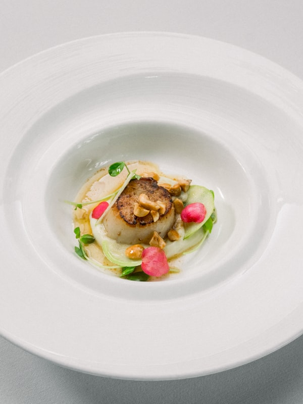
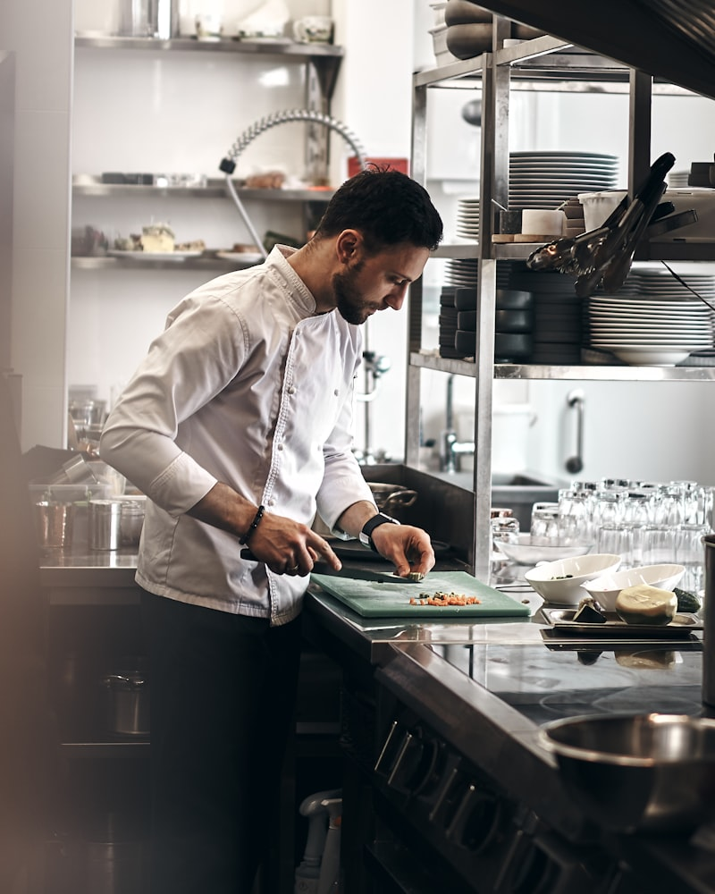
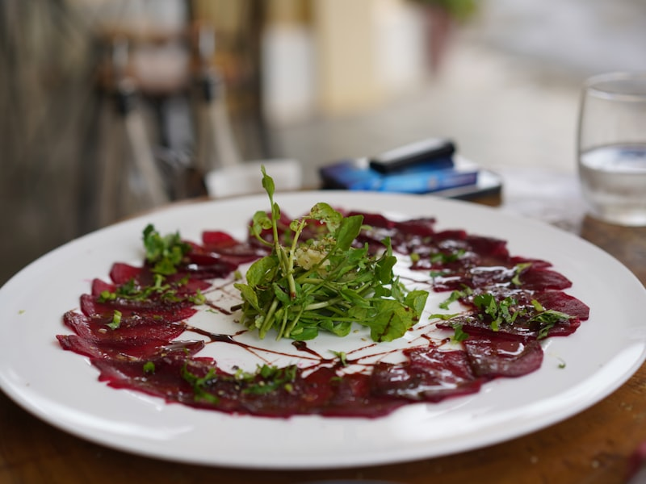
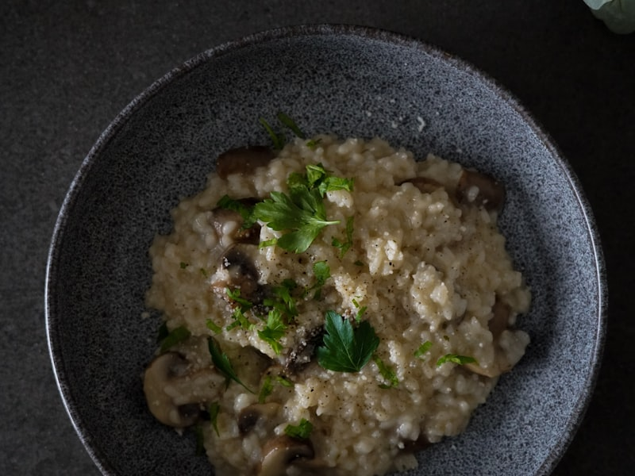
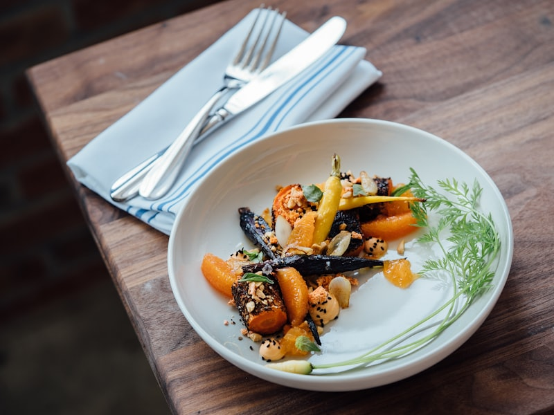
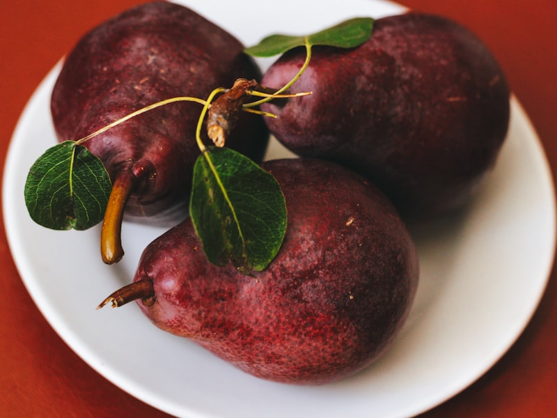
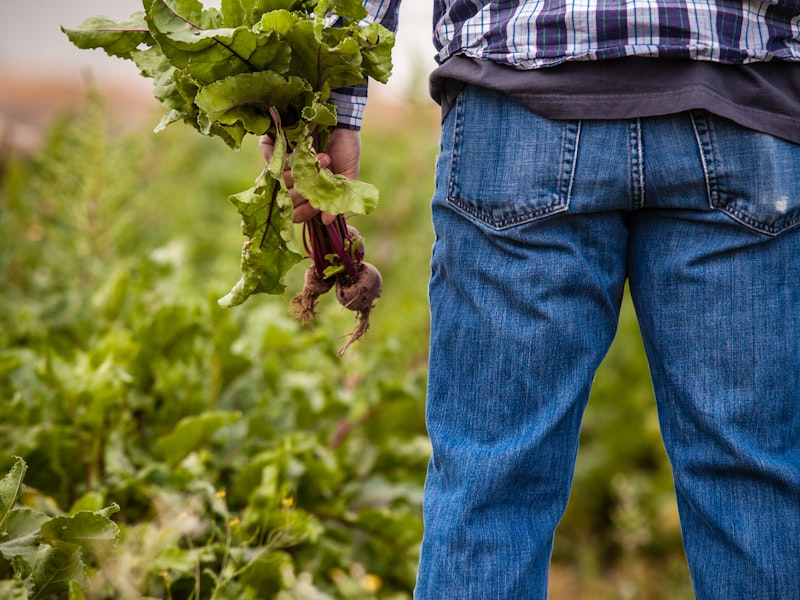

Céleri-rave en croûte
Croûte d'herbes sauvages, jus de champignons réduit, purée de panais
32 €
Là où la terre rencontre la table.
Réserver une tableRacines est né en 2019 de la rencontre entre deux passions : la gastronomie belge et le monde végétal. À l'origine du projet, le chef Julien Marchal, formé dans plusieurs maisons étoilées, a choisi de quitter les cuisines de la capitale pour s'installer à Namur et renouer avec les producteurs locaux de la région wallonne.
Ici, le végétal n'est pas une contrainte — c'est le point de départ. Chaque plat est construit autour d'un légume, d'un champignon ou d'une plante sauvage de saison, travaillés avec les techniques de la haute gastronomie : fermentations, cuissons lentes, émulsions. La carte change entièrement toutes les six semaines, dictée par les récoltes des fermes partenaires dans un rayon de 80 km.
La salle de Racines, installée dans une ancienne maison de maître du centre de Namur, accueille 28 couverts dans un décor sobre et chaleureux — pierres apparentes, bois brut, lumière tamisée. Une cuisine ouverte permet aux convives d'observer le travail en temps réel. L'expérience se veut immersive, silencieuse et sincère.

Chaque assiette raconte une géographie.









28 couverts, service intime.
Nous vous recommandons de réserver au moins 3 jours à l'avance.
Rue de Fer 14
5000 Namur, Belgique